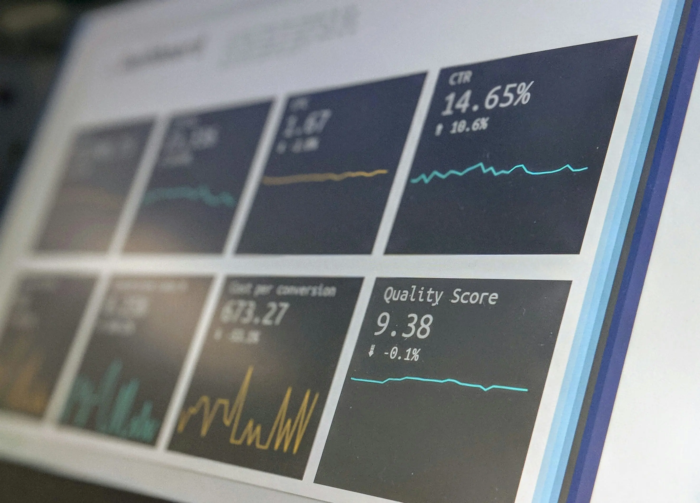
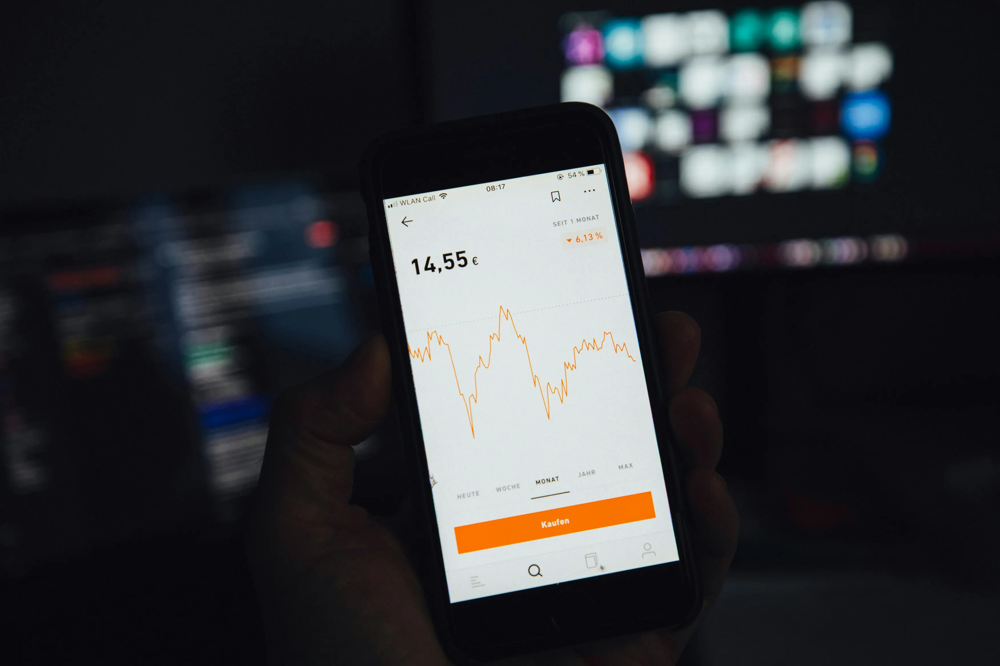

Sé vos mismo
En un mundo donde la exposición permanente puede degradar la salud mental y fomentar la competencia o la comparación constante, es fundamental recuperar el control de nuestra experiencia digital.
Aunque el algoritmo premia la constancia, actualmente premia lo genuino. No sientas la presión de subir constantemente contenido y de crear una versión que no existe, prioriza tu salud mental.

Inspiración
Es común que te compares con la métrica de otros. Intenta transformar la envidia en inspiración, observa el trabajo de tus pares como una fuente de ideas en lugar de una competencia.


Limite tecnologicos
Se que es difícil, pero utiliza aplicaciones externas, para restringir el tiempo que pasas dentro de las redes sociales y evitar la saturación de contenido. Es importante que cuides tu bienestar.